Authors: Aaron Amire
Type: theory · Category: strongly correlated electrons · PDF: https://arxiv.org/pdf/2610.01486v1
Analysis basis: full PDF text, analyzed in chunks
Topic relevance: Keldysh / 2PI / non-Gaussian methods 1/5 · analog quantum simulation 1/5
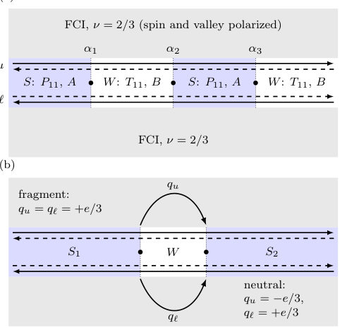
Summary. This theoretical work investigates parafermion physics in FQH-superconductor junctions, showing that spin polarization is crucial for stabilizing the topological $Z_3$ order. The theory predicts a robust $6\pi$-periodic Josephson effect and quantized conductance, contingent on the superconductor providing specific chiral pairing symmetries.
Why it may be interesting. The explicit derivation of fractional Josephson periodicity ($6\pi$) and the connection to specific superconducting pairing symmetries (chiral $p+ip$ states) provide concrete, testable predictions for novel superconducting junctions involving topological matter.
Main problem. The paper analyzes the emergence and properties of $Z_3$ parafermions at domain walls in fractional Chern insulator-superconductor heterostructures, focusing on the critical role of spin polarization.
Main result. Spin polarization ensures the domain walls carry robust $Z_3$ parafermions, leading to a predicted $6\pi$-periodic Josephson current and quantized zero-bias conductance $G = 4e^2/3h$.
Method. The analysis employs conformal field theory techniques, scaling dimension analysis, and the study of zero-mode operators derived from edge theories.
Model / system. The system models a trench connecting two spin-polarized $ u=2/3$ Fractional Quantum Hall (FQH) edges, coupled to superconducting regions. The physics is governed by the interplay between pairing, tunneling, and the topological order of the FQH state.
Key observables. Zero-bias conductance ($G = 4e^2/3h$), Josephson current periodicity ($6\pi$), and the number of protected states (3 per pair).
Important parameters / regimes. Filling fraction $ u=2/3$, spin polarization, and the relative strength of inter-edge vs. intra-edge Coulomb coupling ($K_ ho$).
Assumptions / limitations. The analysis assumes the neutral sector gaps out first, and that the superconducting pairing must possess specific even-frequency, equal-spin, intravalley symmetry.
Figures summary. Figure 1 illustrates the geometry of the trench between two polarized $ u=2/3$ FCI regions, showing the roles of superconducting (S) and tunneling (W) regions in binding the $Z_3$ zero modes.
Paper structure. The paper progresses by first establishing the edge theory for $ u=2/3$, then analyzing how spin polarization modifies the coupling terms ($\Delta, t$), determining the conditions for the formation of the neutral gap, and finally calculating the resulting topological periodicity and quantized conductance.
Most proposals for $Z_3$ parafermions in fractional quantum Hall-superconductor structures used the spin-unpolarized $ν= 2/3$ Halperin $(1,1,2)$ state. The fractional quantum anomalous Hall (FQAH) states of twisted MoTe$_2$ and rhombohedral graphene are believed to be spin- and valley-polarized Jain states, with the same topological order but a different spin structure. We analyze a trench between two polarized $ν= 2/3$ edges. Among the pairing and tunneling bilinears of the edge-mode electrons, exactly two of each have zero conformal spin. Pairing is compatible only with the neutral-mode superconductivity channel and tunneling only with neutral-mode backscattering, whereas in the unpolarized state singlet pairing and tunneling select the same channel. Since the two channels condense the same neutral anyon up to a local operator, the domain walls carry $Z_3$ parafermions, with 3 protected states per pair, whether or not the neutral channel changes between regions; fixing the fermion parity does not enlarge this count. Before the neutral gap forms, pairing is at best marginal for repulsive inter-edge coupling unless an attractive neutral coupling favors its channel; once the gap has formed, both charge terms are relevant for an inter-edge Coulomb coupling below 7/25 of the intra-edge one. The superconductor must supply even-frequency, equal-spin, intravalley pairing, which an s-wave singlet superconductor with only Ising spin-orbit coupling does not provide at leading order, whereas chiral $p+ip$ and $f+if$ states do. The $Z_3$ label is carried by a quasiparticle of the FQAH state, so no process confined to a junction whose tunneling segments are not FQAH can change it, and we expect a $6π$-periodic Josephson current with or without fixed fermion parity.
Authors: Edoardo Mangini, Duc Minh Tran, Boonthum Kunyangyuen, Jun Xiao Lin, Raphael Gruber, Michel Hehn, Stéphane Mangin, Mathias Kläui
Type: experiment · Category: other · PDF: https://arxiv.org/pdf/2610.01568v1
Analysis basis: full PDF text, analyzed in chunks
Topic relevance: quantum measurements 1/5
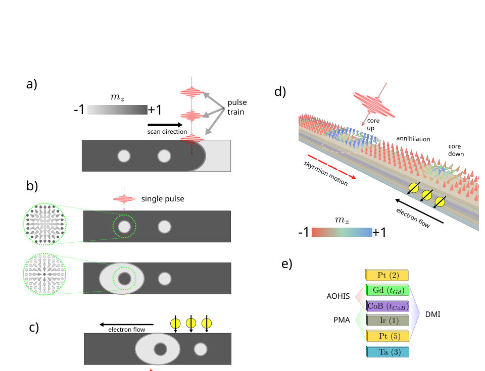
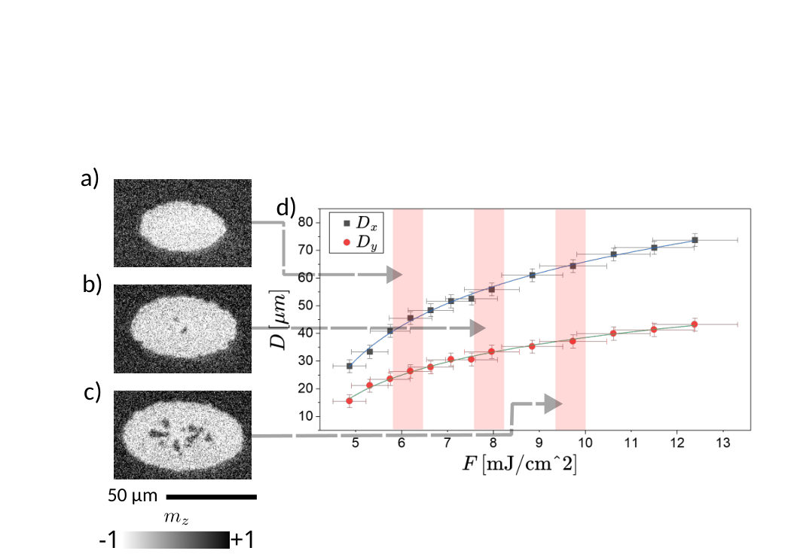
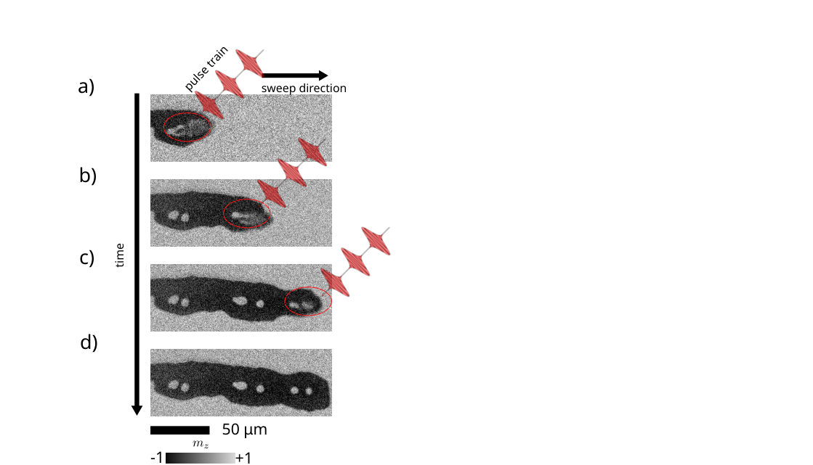
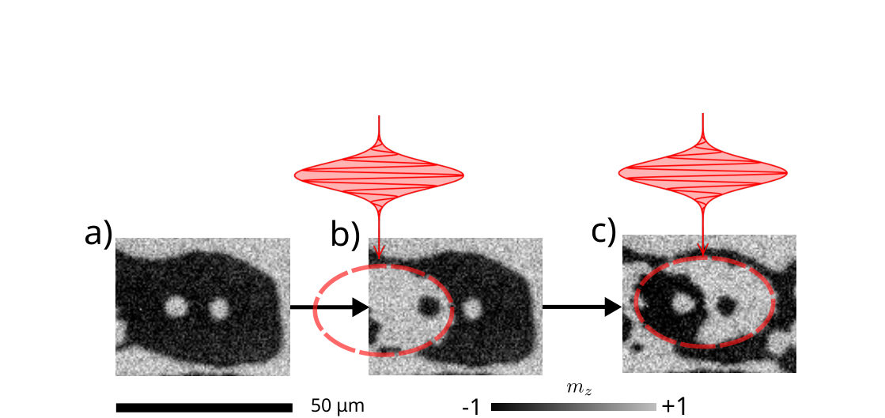
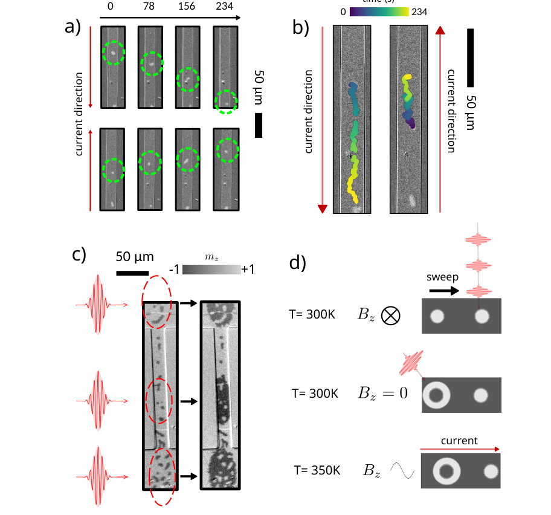
Summary. This research demonstrates a novel opto-spintronic device concept where magnetic skyrmions can be programmed by light and controlled by electricity. Using a multilayer film, the authors achieved deterministic switching of the skyrmion's internal core polarity with a single ultrafast laser pulse. This allows for light to set the internal state while current controls the physical movement, paving the way for advanced memory applications.
Why it may be interesting. This work represents a significant step toward integrating multiple control mechanisms (optical, electrical) into a single spintronic device, which is highly relevant for developing next-generation memory or logic elements.
Main problem. The goal is to develop a deterministic, multi-state control mechanism for magnetic skyrmions by combining all-optical switching of their internal spin structure (polarity) with established current-induced motion.
Main result. The authors successfully demonstrated that a single, ultrafast laser pulse can deterministically toggle the core polarity of magnetic skyrmions in a patterned multilayer structure, which can then be combined with electrical currents to control the skyrmion's position.
Method. The study uses ultrafast laser pulses (30 fs) to induce All-Optical Helicity-Independent Switching (AO-HIS) in a patterned multilayer film, followed by applying DC currents to observe deterministic skyrmion motion.
Model / system. The physical system is a Pt/Ir/CoB/Gd/Pt multilayer stack, engineered to stabilize magnetic skyrmions and enable AO-HIS. The structure is patterned into wires to facilitate the combination of optical programming and electrical transport.
Key observables. Skyrmion core polarity (toggled by light), skyrmion position (controlled by current), switching thresholds (Fth, FMD), and the stability of the magnetic textures.
Important parameters / regimes. Ultrafast laser pulse fluence (e.g., 3.98 mJ cm^-2 for switching), DC current density (e.g., 5.9 x 10^9 A m^-2), and temperature (up to 350 K).
Assumptions / limitations. The ability to combine stabilization and AO-HIS depends sensitively on the material stack composition; furthermore, the measurements do not resolve the full reversal dynamics, only the before and after states.
Figures summary. Figures illustrate the concept sequence: (a) writing skyrmions via pulse-train scanning, (b) single-pulse reversal of core polarity, and (c) subsequent current-induced motion in a patterned wire. Other figures detail the AO-HIS operating window and thermal stability.
Paper structure. The paper progresses by first establishing the material platform and the AO-HIS mechanism using single pulses. It then demonstrates the writing of skyrmions optically, followed by combining this optical programming step with established current-driven motion in a patterned wire device.
Magnetic skyrmions are promising nanoscale information carriers because their position can be manipulated by electrical currents. The additional ability of deterministic control of the spin structure would allow the use of magnetic skyrmions as multi-state bits, expanding the capabilities of skyrmion devices further. Such control could be realized by coupling all-optical helicity independent switching of magnetization (AO-HIS) to magnetic skyrmions. This is realized in a Pt/Ir/CoB/Gd/Pt multilayer that is engineered to stabilize magnetic skyrmions and, at the same time, enable AO-HIS by single ultrafast laser pulse. Laser excitation is used to write skyrmionic textures, whose polarity is selected by a small applied out-of-plane field. A single 30 fs laser pulse is then used to toggle the magnetization of an illuminated region containing skyrmionic textures, reversing their polarities without requiring any magnetic field or current pulses. This establishes deterministic optical switching of the skyrmion spin structure as a new manipulation channel, distinct from previously reported optical nucleation and annihilation. The material is then patterned into a wire, to combine the optical manipulation with current-induced skyrmion motion. These results establish a route toward opto-spintronic skyrmion devices in which light programs the internal state of a skyrmion and electrical currents control its position.
Authors: Mona Bhukta, Duc Minh Tran, Kilian Leutner, Takaaki Dohi, Nikolai S. Kiselev, Filipp N. Rybakov, Olle Eriksson, Fabian Kammerbauer, Sebastian Wintz, Markus Weigand, Hendrik Ohldag, Maria-Andromachi Syskaki, Robin Tietgen, Edoardo Mangini, Sabrina Kerber, Thibaud Denneulin, Joseph Vimal Vas, Rafal E. Dunin-Borkowski, Bastian Pfau, Oleg A. Tretiakov, Robert Frömter, Mathias Kläui
Type: both · Category: other · PDF: https://arxiv.org/pdf/2610.01339v1
Analysis basis: full PDF text, analyzed in chunks
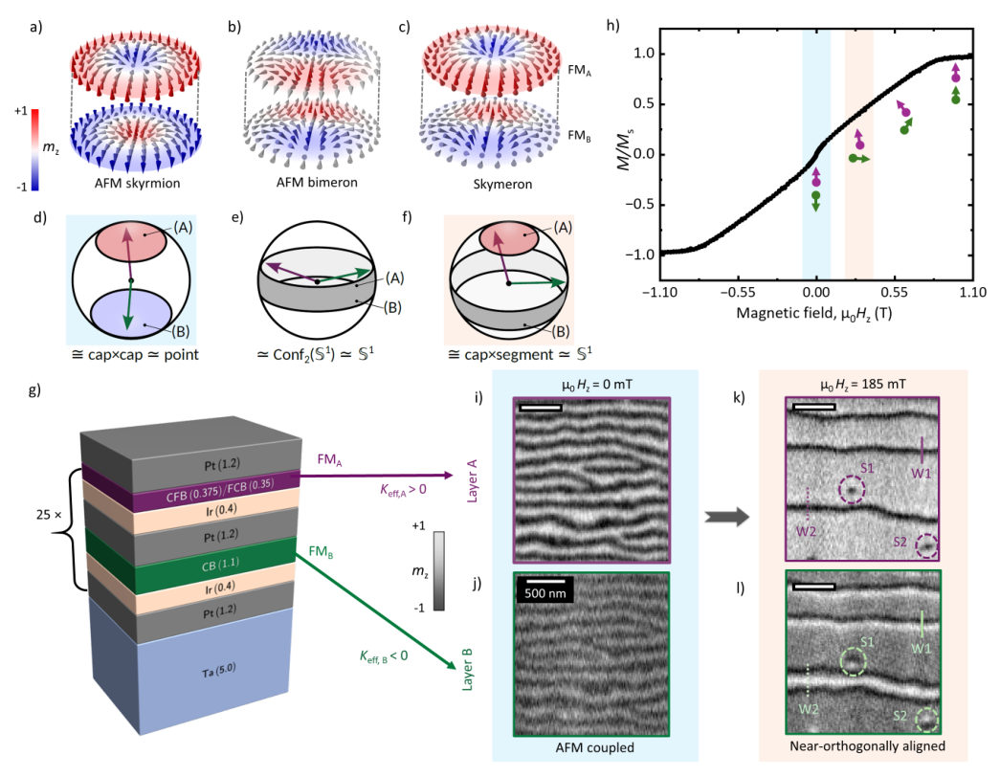
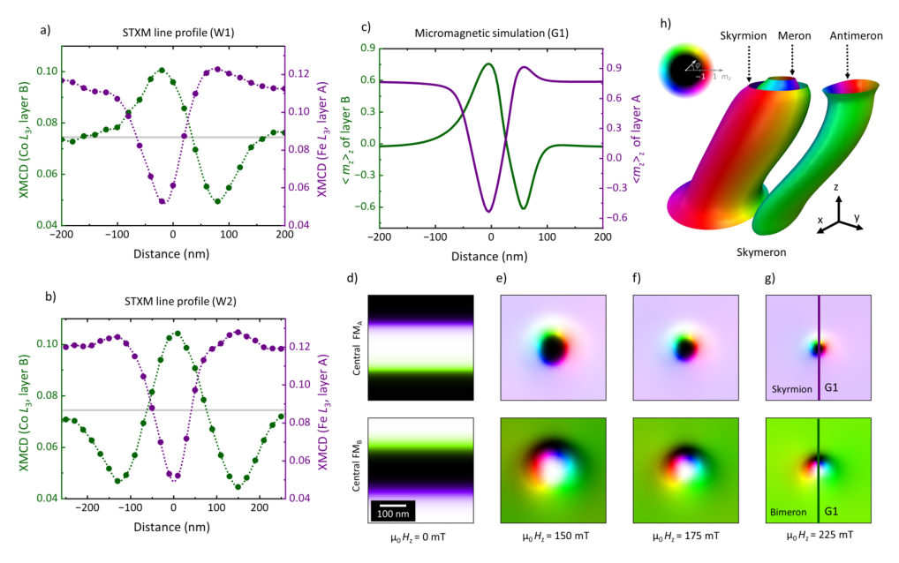
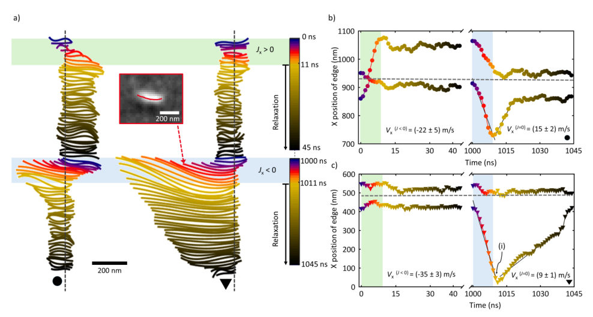
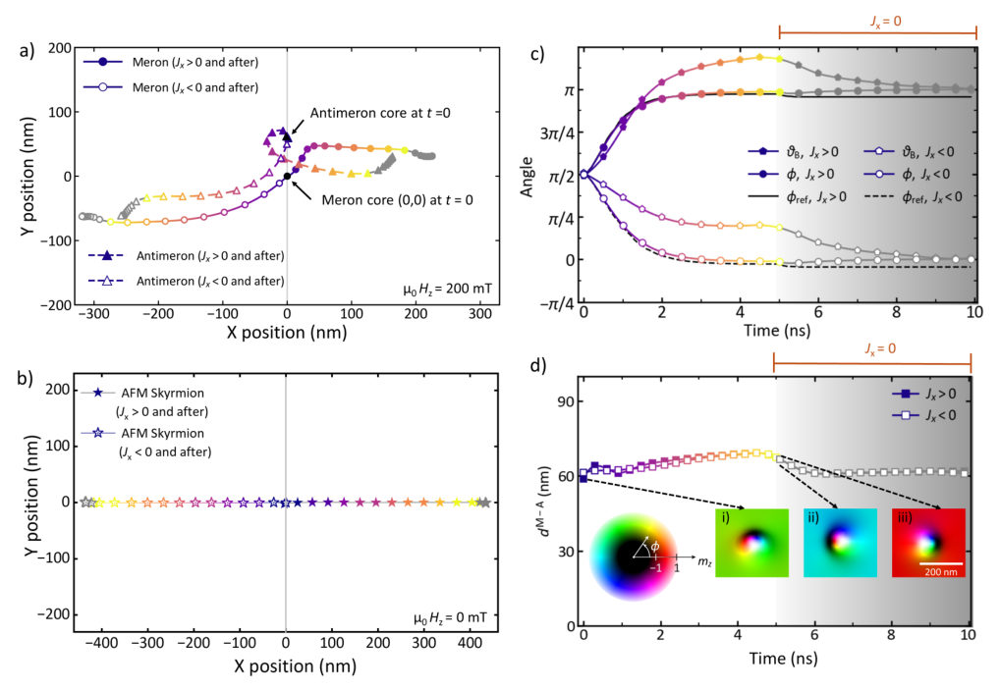
Summary. This paper reports on the creation and characterization of a novel 3D topological spin texture called a skymeron within synthetic antiferromagnets. By combining advanced X-ray microscopy with micromagnetic simulations, the authors demonstrate that the skymeron's dynamics are non-rigid, exhibiting an inertia-like motion due to the finite-time relaxation of stored magnetic energy. This highlights layer-selective anisotropy engineering as a powerful tool for designing complex magnetic materials.
Why it may be interesting. The discovery of internal dynamical degrees of freedom in magnetic textures moves beyond simple rigid-body descriptions, suggesting new avenues for controlling spintronic devices using engineered material interfaces.
Main problem. The study investigates the dynamics of complex, higher-dimensional topological spin textures, specifically the 'skymeron,' which exists in synthetic antiferromagnets (SyAFMs). The goal is to understand the internal degrees of freedom governing these textures beyond simple rigid-body approximations.
Main result. The research successfully realizes and images the skymeron and demonstrates that its dynamics exhibit an inertia-like post-pulse continuation, which is attributed to the finite-time relaxation of stored energy within the system.
Method. The work combines element-specific X-ray microscopy (STXM/XMCD) for imaging with time-resolved pump-probe measurements and advanced micromagnetic simulations.
Model / system. The physical system is a Synthetic Antiferromagnet (SyAFM) stack, allowing independent tuning of magnetic anisotropy in two coupled ferromagnetic layers. The complexity arises from the order parameter defined on a product space ($ ext{S}^2 imes ext{S}^2$), enabling the formation of the skymeron texture.
Key observables. Layer-resolved spin textures (skyrmion coupled to a bimeron), polarity-dependent dynamics, and the time evolution of energy contributions during current pulses.
Important parameters / regimes. Layer-selective anisotropy engineering, current pulse magnitude ($\pm 4 imes 10^{10} ext{ Am}^{-2}$), and the resulting topological charge pair/triplet.
Assumptions / limitations. Conventional dynamics models (like the Thiele equation) are insufficient as they fail to capture the internal dynamical degrees of freedom present in the skymeron.
Figures summary. Figures illustrate the structural realization of the skymeron via element-selective imaging, the field-driven evolution between topological regimes, and the time-dependent energy relaxation profiles following a current pulse.
Paper structure. The paper progresses from establishing the physical system (SyAFMs) and the novel texture (skymeron) via structural characterization, to demonstrating the dynamics using time-resolved measurements, and finally providing a microscopic explanation for the observed inertia via energy analysis in simulations.
Topological spin textures in antiferromagnets inherit the compensated magnetic order of the host material, resulting for skyrmions in the suppression of the skyrmion Hall effect and enabling ultrafast dynamics that make them attractive for low-power spintronic devices. In intrinsic antiferromagnets, the two sublattices are identical, but synthetic antiferromagnets offer additional control mechanisms by enabling independent tuning of the properties of two ferromagnetic layers. Analogous to a ferrimagnet, the total magnetic moment can be adjusted by compensating the two-layer moments. Here, we demonstrate that tuning the effective magnetic anisotropy difference between the two layers drives a spin-flop transition where one layer reorients and thus stabilizes an orthogonal configuration with one layer oriented along the out-of-plane direction and the other in-plane. In this transition, an antiferromagnetic skyrmion undergoes a homotopic reconfiguration into a complex spin texture comprising a skyrmion coupled to an in-plane bimeron. Element-specific X-ray microscopy resolves this texture layer by layer: one hosts an out-of-plane skyrmion coupled to an in-plane bimeron in the other. We refer to this previously unexplored three-dimensional spin texture as a skymeron. By using time-resolved pump-probe X-ray microscopy, we discover unique polarity ,dependent dynamics during current pulses: a short post-pulse inertia-like continuation of the motion, and a slower return towards the pinned initial state. Micromagnetic simulations reveal that the inertia-like propagation originates from the finite-time relaxation of reorientation of the skymeron. Our results establish layer-selective anisotropy engineering as a route to uncharted composite spin textures with internal dynamical degrees of freedom, not possible in conventional antiferromagnets with identical sublattices.
Authors: Ziao Han, Lifen Xiang, Tianren Wang, Congcong Le, Jun Zhan, Siyi Lei, Sonia Francoual, Qisi Wang, Jiangping Hu, Tao Xiang, Ronny Sutarto, Xianxin Wu, X. J. Zhou, Zhihai Zhu
Type: both · Category: strongly correlated electrons · PDF: https://arxiv.org/pdf/2610.01757v1
Analysis basis: full PDF text, analyzed in chunks
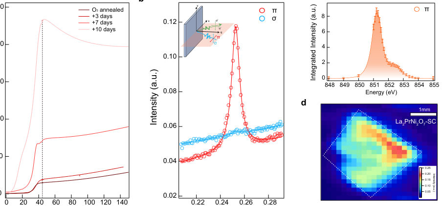
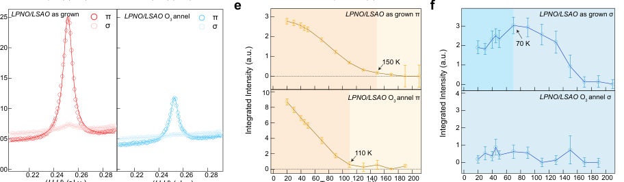
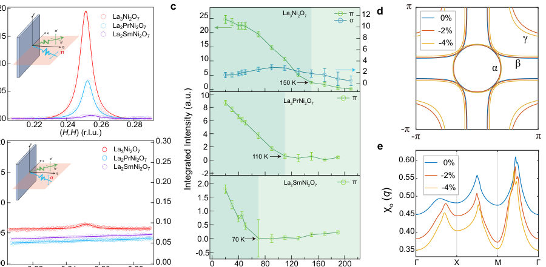
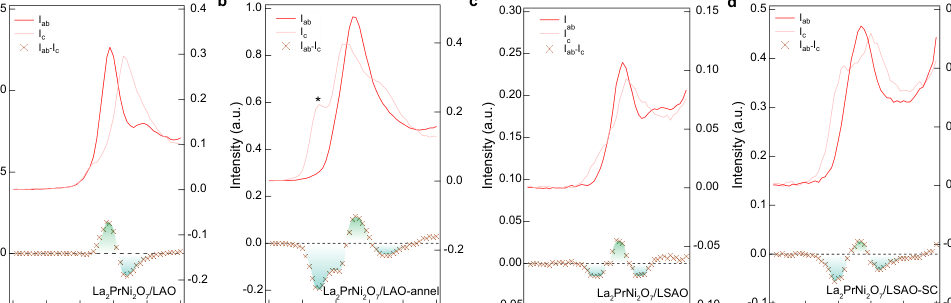
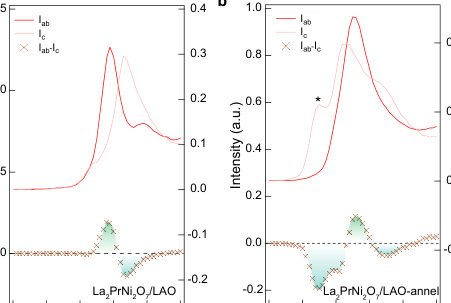
Summary. This paper uses X-ray scattering and spectroscopy to study how tuning the interlayer coupling in superconducting nickelates selectively suppresses one electronic order (charge-like anisotropy) while weakening another (SDW). The findings suggest that these competing orders are governed by distinct energy scales, offering new insights into the mechanism of high-temperature superconductivity in these materials.
Why it may be interesting. The selective suppression of different competing orders by tuning structural parameters (interlayer coupling) provides a concrete model for understanding how competing instabilities govern the superconducting dome in strongly correlated nickelates.
Main problem. The study investigates the complex interplay between superconductivity and competing electronic orders, specifically Spin-Density Wave (SDW) and charge-like anisotropy order, in bilayer nickelate thin films.
Main result. The research demonstrates that enhancing interlayer coupling, via oxygen annealing or A-site substitution, selectively suppresses the charge-like anisotropy order while weakening but retaining the SDW order.
Method. The work combines advanced experimental techniques, including polarization-resolved O K-edge X-ray absorption and Resonant Elastic X-ray Scattering (REXS), with theoretical electronic structure calculations.
Model / system. The physical system is superconducting bilayer nickelate thin films (e.g., $ ext{La}{2-x} ext{Pr}_x ext{Ni}_2 ext{O}$), whose electronic properties are tuned by controlling oxygen stoichiometry and applying strain via rare-earth substitution.
Key observables. SDW transition temperature ($T_{ ext{SDW}}$), charge-like anisotropy order signal (via $\sigma$-polarization REXS), and interlayer hybridization strength (via O K-edge XAS).
Important parameters / regimes. Interlayer coupling strength, oxygen content ($\delta$), and applied uniaxial pressure (mimicked by A-site substitution).
Assumptions / limitations. The observed phenomena are consistent with a spin-spinless stripe ground state, and the tuning mechanisms (annealing/substitution) effectively control the interlayer coupling.
Figures summary. Figures illustrate the temperature dependence of SDW and charge-like order signals under varying oxygen content and substrate conditions, confirming the selective suppression mechanism.
Paper structure. The paper systematically presents measurements showing how tuning the interlayer coupling (via annealing or substitution) differentially affects the SDW and charge-like orders, linking these changes to Fermi surface reconstruction.
The discovery of spin-density-wave (SDW) order in bilayer nickelates has intensified interest in its interplay with superconductivity. Unlike cuprates, where doping rapidly suppresses the Néel temperature, the SDW transition temperature ($T_{\mathrm{SDW}}$) in bilayer nickelates is robust against oxygen annealing and even increases under pressure. Here, we combine oxygen annealing with isovalent rare-earth ($A$-site) substitution to effectively apply $c$-axis uniaxial pressure, realizing superconducting bilayer nickelate films with $T_{\mathrm{SDW}}$ suppressed from 150 K to 70 K. Notably, while SDW order is weakened but remains, a second charge-like anisotropy order is completely eliminated in the superconducting state. Polarization-resolved O $K$-edge X-ray absorption and electronic structure calculations show that strengthened interlayer coupling reconstructs the Fermi surface and weakens the SDW. These findings, consistent with a spin-spinless stripe ground state, provide new insight into the mechanism of density wave formation and their interplay with superconductivity.
Authors: Jackson C. Turner, Michael I. Weinstein
Type: theory · Category: other · PDF: https://arxiv.org/pdf/2610.01875v1
Analysis basis: full PDF text, analyzed in chunks
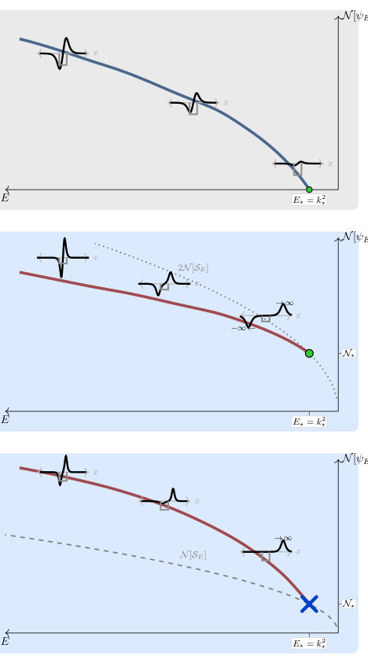
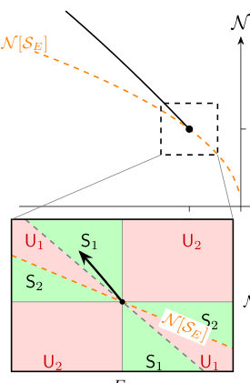
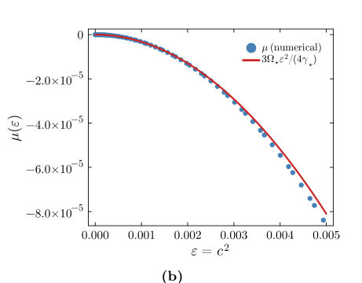
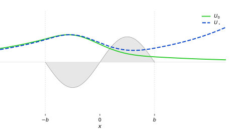
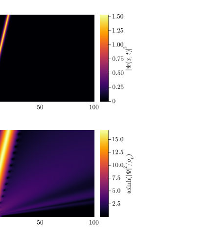
Summary. This paper rigorously analyzes the orbital stability and instability of nonlinear bound states that emerge from linear scattering or transmission resonances in the nonlinear Schrödinger equation. By developing criteria based on resonance eigenproperties, it provides a powerful mathematical tool to predict the long-time behavior of such quantum systems. This is highly relevant for understanding nonlinear wave phenomena in physical systems like Bose-Einstein condensates or optical fibers.
Why it may be interesting. This work provides rigorous mathematical tools to characterize the stability of nonlinear structures (like solitons or breathers) whose existence is fundamentally linked to the spectral properties (resonances) of the underlying linear operator, which is crucial in quantum optics and nonlinear wave physics.
Main problem. The paper establishes precise criteria for determining the nonlinear orbital stability and instability of bound states that are induced by linear scattering or transmission resonances.
Main result. The stability of these resonance-induced states is determined by the signs of two quantities, $\Omega^\star$ and $ u^\star$, requiring $\Omega^\star > 0$ and $ u^\star < 0$ for orbital stability near the bifurcation point.
Method. The analysis uses bifurcation theory applied to the nonlinear Schrödinger/Gross-Pitaevskii equation, analyzing the spectral properties of linearized operators associated with the resonance eigenpairs.
Model / system. The system is the focusing one-dimensional cubic nonlinear Schrödinger/Gross-Pitaevskii equation ($i\partial_t\Psi = -\partial_x^2\Psi + V(x)\Psi -|\Psi|^2\Psi$). The analysis focuses on nonlinear bound states bifurcating from linear scattering or transmission resonances associated with the underlying linear operator $H_V = -\partial_x^2 + V(x)$.
Key observables. The $L^2$ norm of the state, $N[\psi] = \|\psi\|^2_{L^2}$, and the stability indicators $\Omega^\star$ and $ u^\star$.
Important parameters / regimes. The resonance frequency ($\gamma_\star$), the bifurcation parameter ($\epsilon$), and the potential parameters defining the resonance (e.g., $ au$ in later sections).
Assumptions / limitations. The analysis assumes the non-degeneracy condition $B^\star eq 0$ and is valid for small bifurcation parameters $\epsilon$ or small perturbation parameters $ au$.
Figures summary. Figure 2.1 illustrates different bifurcation scenarios (point spectrum, SR, TR) in the $k$-plane and the $(N, E)$-plane. Later figures track the evolution of stability terms ($\Omega^\star, u^\star$) as a function of a perturbation parameter $ au$.
Paper structure. The paper first establishes the general framework for resonance-induced states, detailing the stability criteria based on $\Omega^\star$ and $ u^\star$. It then applies this framework to specific potentials, including those derived from Pöschl-Teller potentials, and extends the analysis to continuous families of potentials using perturbation theory.
We study the focusing one-dimensional cubic nonlinear Schrödinger / Gross--Pitaevskii equation (NLS-GP), where the potential of the underlying linear Schrödinger operator, $H_V=-\partial_x^2+V(x)$, is compactly supported. In \cite{turner2026resonance} the authors proved that purely imaginary zeros (transmission resonances) or purely imaginary poles in the lower half plane (scattering resonances) of a reflection coefficient of $H_V$ seed branches of {\it resonance-induced nonlinear bound states}, and that these states bifurcate at a strictly positive $L^2(\mathbb R)$ excitation threshold. This is in contrast to nonlinear bound states which bifurcate at zero $L^2$-norm from point spectra of $H_V$ (corresponding to poles in the upper half plane). In this paper we establish precise criteria for the nonlinear orbital stability and instability of the resonance-induced states near the bifurcation point. A corollary is that resonance-induced nonlinear states are orbitally stable if i) the underlying linear (scattering or transmission) resonance frequency is sufficiently small, and ii) the corresponding linear resonance eigenmode is strictly positive. Numerical simulations are presented to explore regimes not accessible to our theory, and to explore the large time dynamics for initial conditions near stable and unstable resonance-induced nonlinear bound states.
Authors: Ziyi Wang, Kaitlin Slicker, Weichen Tang, Boyu Qie, Rafal Zuzak, Haowen Pang, Yudi Huang, Xinheng Li, Peter H. Jacobse, Steven G. Louie, Felix R. Fischer, Michael F. Crommie
Type: both · Category: other · PDF: https://arxiv.org/pdf/2610.01194v1
Analysis basis: full PDF text, analyzed in chunks
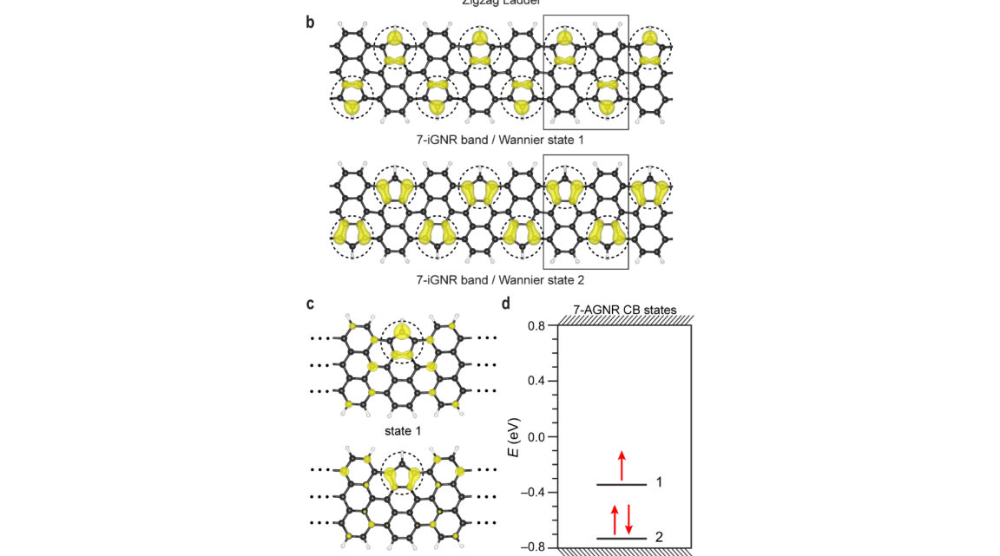
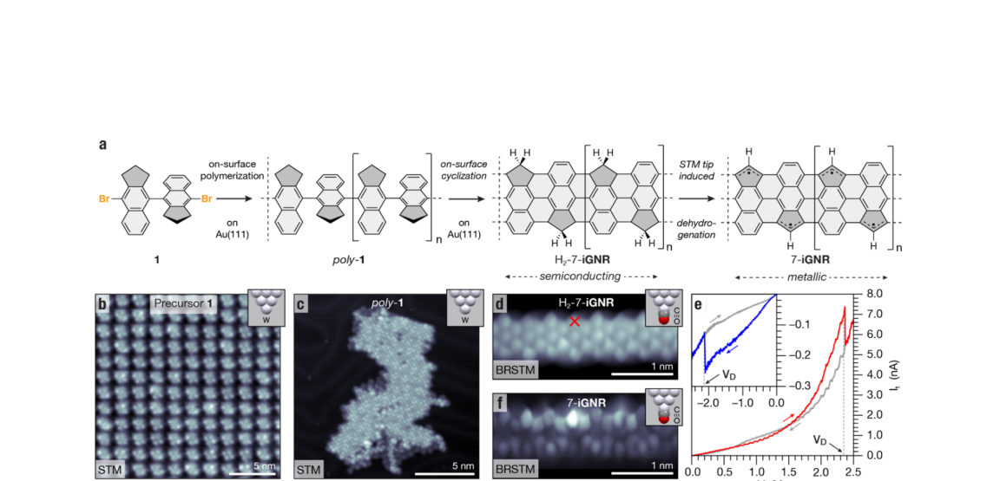
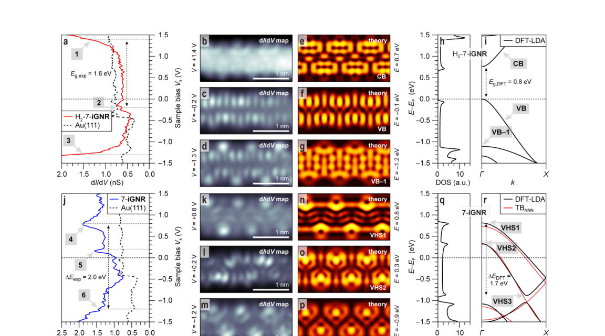
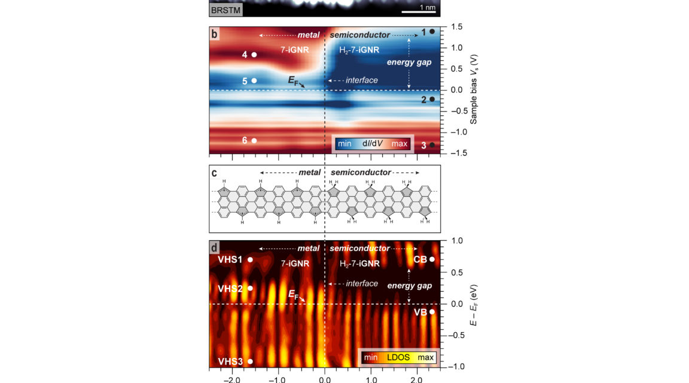
Summary. This work reports on the synthesis and characterization of metal-semiconductor heterojunctions in single Graphene Nanoribbons. By using STM-induced dehydrogenation, the authors create metallic segments within semiconducting GNRs. The resulting junction exhibits favorable electronic alignment, suggesting a viable pathway for building atomically precise, low-barrier p-type contacts for future nanoelectronics.
Why it may be interesting. The precise control over electronic interfaces in 1D quantum materials like GNRs is crucial for building nanoscale electronic components, offering insights into interface physics relevant to quantum device architectures.
Main problem. The primary challenge addressed is the difficulty in creating high-quality, low-barrier electronic interfaces between semiconducting Graphene Nanoribbons (GNRs) and metallic contacts.
Main result. The authors successfully demonstrated a method to synthesize metallic segments within semiconducting GNRs, creating a metal-semiconductor heterojunction with a small energy barrier for hole injection.
Method. The study combines bottom-up on-surface synthesis techniques with advanced characterization using Scanning Tunneling Microscopy (STM) and Spectroscopy (STS), complemented by first-principles DFT calculations.
Model / system. The system involves GNRs (specifically 7-iGNRs) synthesized on Au(111). The electronic structure is modeled using the Su-Schrieffer-Heeger (SSH) Hamiltonian and analyzed via DFT-LDA, treating the junction as a metal-semiconductor interface.
Key observables. Zero-bias conductance (nonzero spectral weight at E_F), band edge alignment, and the absence of a discernible depletion region across the interface.
Important parameters / regimes. The energy barrier for hole injection, the GNR width, and the bias voltage used for STM tip-induced dehydrogenation.
Assumptions / limitations. The process relies on the ability to locally remove hydrogen atoms via STM tip manipulation, and STS measurements are assumed to recover bulk GNR properties near the interface.
Figures summary. Figures illustrate the synthesis progression (precursor to H2-7-iGNR), the quantum ladder model, and crucially, the dI/dV spectra and LDOS maps comparing the semiconducting and metallic states across the junction.
Paper structure. The paper details the synthesis process (precursor deposition, polymerization, dehydrogenation) followed by a detailed electronic structure analysis using STS and DFT to characterize the resulting metal-semiconductor junction.
Graphene nanoribbons (GNRs) are a highly tunable class of one-dimensional (1D) quantum materials that can be fabricated through bottom-up synthesis. Precise control over GNR band gaps and band-edge alignments has established them as a promising nanoelectronics platform, but forming high-quality electronic interfaces remains challenging. Here we combine sequential on-surface synthesis and scanning tunneling microscopy (STM)-induced dehydrogenation to directly write metallic 7-iGNR segments into otherwise semiconducting H$_2$-7-iGNRs without changing the GNR width or carbon backbone connectivity. The resulting metallic segments exhibit nonzero spectral weight at the Fermi level ($E_\mathrm{F}$) and spatially extended electronic states, consistent with two dispersive bands crossing $E_\mathrm{F}$. The new metallic states are well described by an extended Su--Schrieffer--Heeger zigzag-ladder Hamiltonian. Scanning tunnelling spectroscopy (STS) and first-principles calculations show that the valence band edge of adjacent, connected semiconducting GNR segments lies close to $E_\mathrm{F}$ for the metallic segments. STS spectra recover bulk GNR properties within $\sim$1 nm on either side of the metal-semiconductor GNR interface, with no discernible depletion region. The observed GNR band edge alignment is consistent with a small energy barrier for hole injection, thus suggesting a possible route towards atomically precise, low-barrier p-type contacts for future GNR-based electronic devices.